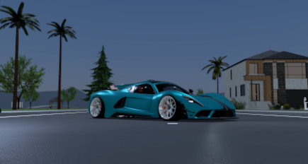
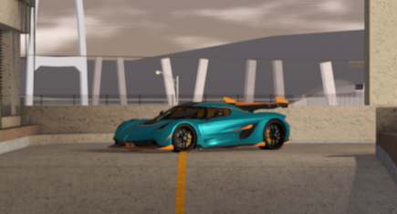
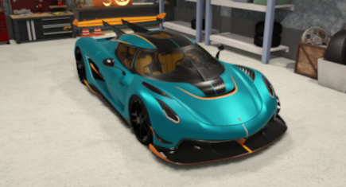

Driving _ Br
Somos um grupo de pessoas que compartilham a mesma paixão: carros. No nosso servidor do Discord, todo dia rola conversa sobre lançamentos, preparação, customização e tudo que envolve o mundo automotivo. Aqui ninguém julga, seja você fã de carros esportivos, antigos, rebaixados ou originais de fábrica.
Além de bater papo, trocamos dicas, imagens dos nossos projetos e até combinamos encontros virtuais e presenciais. O objetivo é criar um espaço amigável, onde todos podem aprender, ensinar e fazer amizades com quem realmente entende o valor de um bom motor roncando.
Como Entrar no Nosso Discord
Para entrar no nosso Discord, basta pegar o link de convite que divulgamos nas redes sociais ou pedir para um dos membros. Se você ainda não tiver uma conta, é só criar rapidamente no site ou aplicativo do Discord. Depois é só acessar o link, entrar servidor e se apresentar na sala de boas-vindas contando um pouco sobre você e sua paixão por carros.
Desde as corridas de Fórmula 1, com seus circuitos desafiadores e tecnologia de ponta, até os campeonatos regionais de kart ou automobilismo amador, cada competição tem seu charme e seu nível de dificuldade. Além da habilidade ao volante, os pilotos precisam lidar com a pressão, tomar decisões rápidas e trabalhar em sintonia com suas equipes. Esses campeonatos também revelam histórias incríveis de superação, com corredores que venceram obstáculos, acidentes ou limitações financeiras para conquistar um lugar no pódio. O ambiente competitivo, os treinos intensos e o apoio dos fãs transformam cada temporada em uma jornada eletrizante. Para quem ama velocidade e motores rugindo, os campeonatos de corrida são mais do que uma paixão: são um estilo de vida.
Um Grupo de Apaixonados por Carros
Existe algo especial quando pessoas com o mesmo amor se reúnem e foi assim que nasceu nosso grupo de apaixonados por carros. Mais do que um simples hobby, os carros são nossa conexão, nossa linguagem e nossa inspiração. Cada ronco de motor, cada detalhe de um projeto, cada volta dada em um encontro ou evento, é motivo de conversa, admiração e amizade.
Aqui, cada membro tem sua história: alguns gostam de carros clássicos, outros são fãs de velocidade, tunados ou modelos raros. Uns entendem tudo de mecânica, enquanto outros só querem curtir e aprender mais. E é justamente essa mistura que torna o grupo tão único e verdadeiro. Nosso espaço — seja em um estacionamento, numa garagem ou no Discord — é onde trocamos ideias, ajudamos uns aos outros, organizamos rolês e celebramos a cultura automotiva. Não importa se você tem um carro antigo, um projeto em andamento ou só sonha em ter o seu — o importante é o respeito, a amizade e a paixão por quatro rodas.
Esse é o nosso grupo. Onde o motor fala mais alto e a amizade acelera junto. Aqui a gente compartilha histórias, conselhos, risadas e até aquele empurrãozinho nos momentos difíceis — seja pra resolver um problema no carro ou na vida. Cada encontro é uma nova lembrança, cada novo membro é recebido como parte da família. Porque mais do que falar de carros, a gente vive essa paixão juntos. Se você sente o coração bater mais forte ao ouvir o som de um motor... então esse também é o seu lugar.